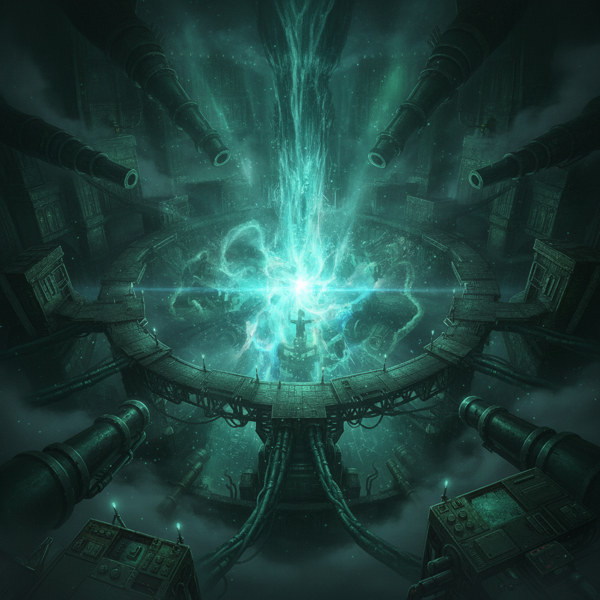
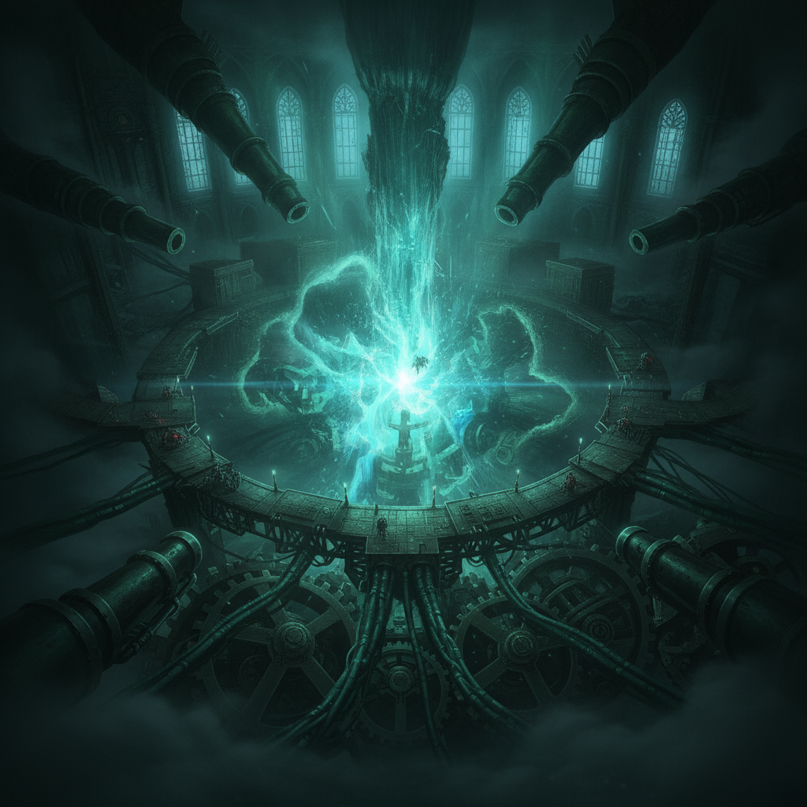
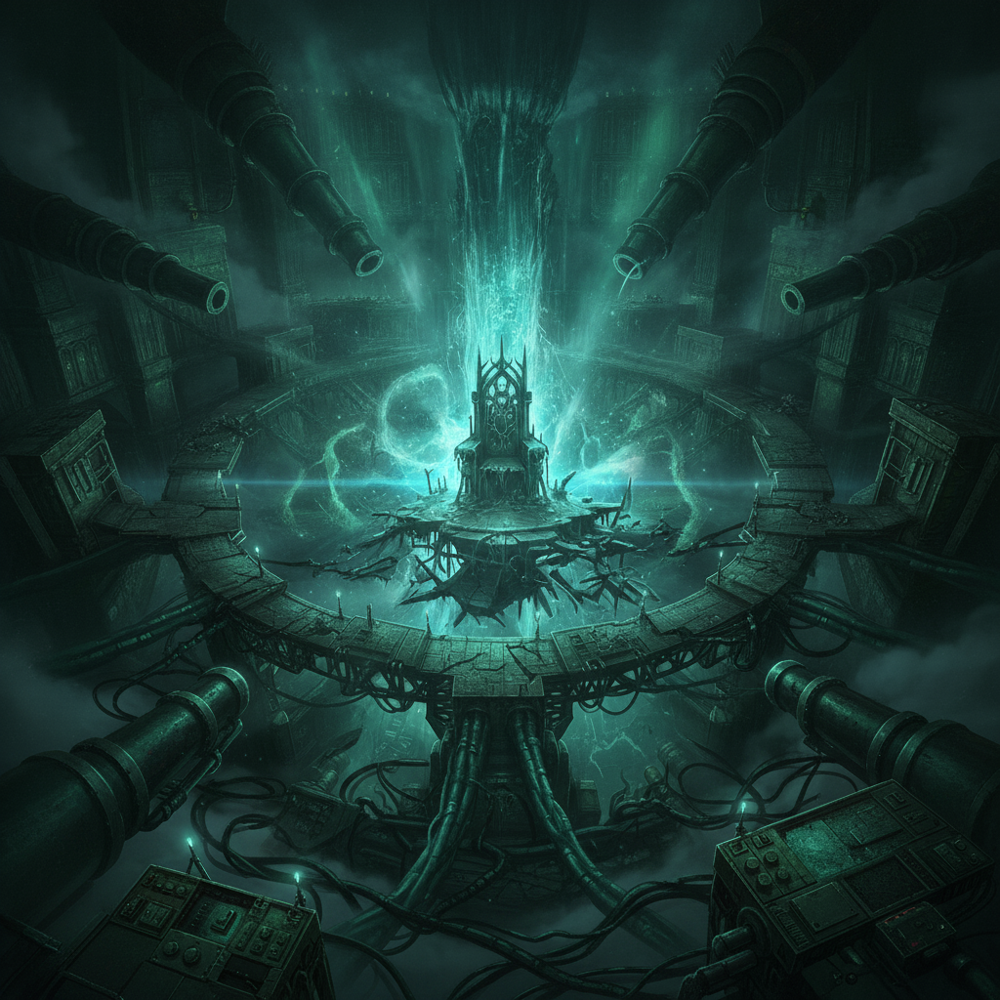
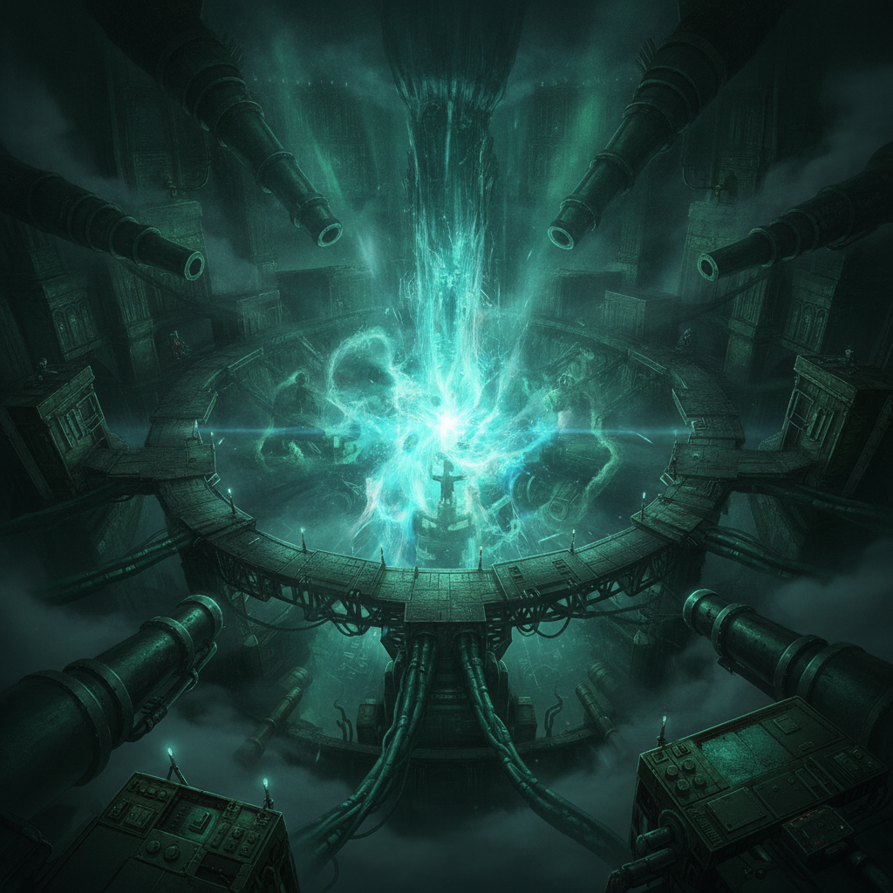

The Inner Sanctum. The monstrous heart of the enemy's operation. Our coalition—the discarded, the people the world threw away—converges for the final assault.

Wren is a shadow, a whisper, moving through the chaos with deadly purpose. She disables their core systems not with a grand weave, but with a smuggler's sabotage, a filed-smooth cog dropped into a critical gear.

The boss, a figure of immense power, finds its greatest weapon nullified, its throne of lies crumbling. The battle is fierce, but the tide has turned.

It is not a grand, heroic victory. It is a quiet, methodical dismantling of a corrupt system by the very people it was designed to crush. The discarded rise, and they bring the enemy down.